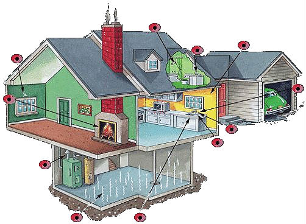
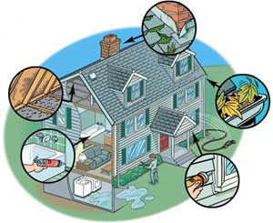
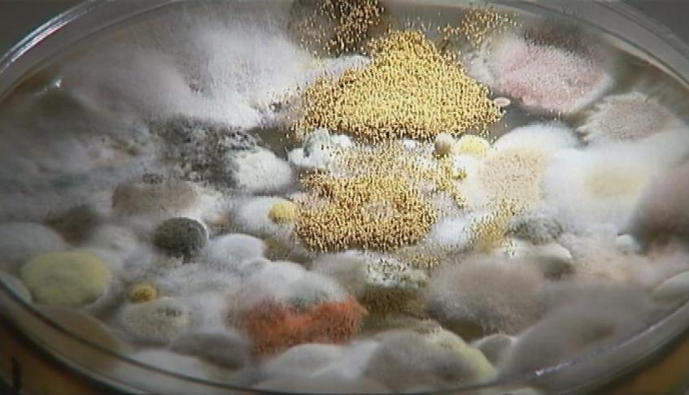

Contamination
Molds are simple microscopic organisms that thrive in wet and damp environments. While many molds are a necessary part of our environment, their ability to destroy and decay organic organisms makes them a problem for most people. In our homes and in our bodies, mold can certainly turn very ugly. When molds start the breeding & growing process, no area is safe from contamination. Mold can breed and reproduce at an incredible rate, and you can literally wake up one day and see a completely mold free area turned into a science experiment. It is essential to nip this problem in the bud, and prevent the mold from contaminating areas that are free and clear of it. This, however, is easier said than done, and most methods you may have heard of to alleviate this serious issue, can actually develop into food sources for mold. Leave mold remediation to the pros!
Water Damage
If your home has been the target of water damage, then the chances are better than good that you will be a victim of mold intrustion. Whether your basement leaked, or you had burst pipes, or your hot water leaked, or whatever other reason that cauled dampness and humidity levels to increase, mold will begin to grow within 24 to 48 hours. The darker and the damper the area, the more the mold loves it. Not good! And unfortunately, the mold will continue to grow and grow and breed and spread (fast), until something is done to destroy the actual mold, the food source, and the toxic environment. Usually, on cinderblock foundations, if there is water damage, the blocks will develop a white, fuzzy, crystal-type substance on the block, which is known as efflorescence. This is a sure sign that there is water sitting inside the hollow cinderblocks, and mold is the next step.
Breeding
Mold breeding and spreading is a whole other can of worms. Mold absolutely thrives in damp environments. Throw into the mix a dark area, and you have just upped the chances of mold spreading by something like 75%. A dark, damp environment, is the ideal breeding ground for molds of various species. Combine that with the fact that most molds are 85% invisible, and your house may be in to some unpleasant happenings. Let's put it this way - if you have water, dampness, or high humidity levels - you will have mold. It doesn't even necessarily have to be in a basement. Mold can grow anywhere; basements just happen to be the prime environment that mold looks for.